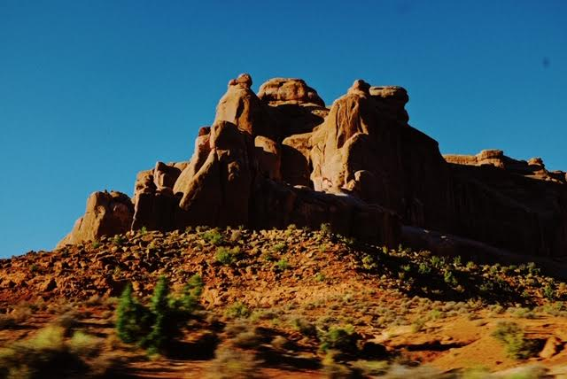
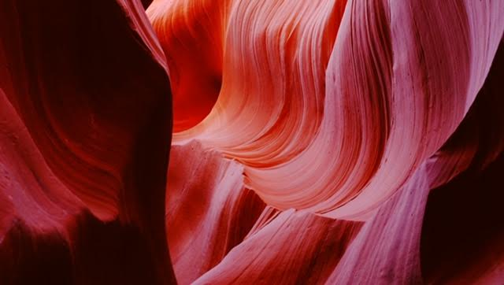
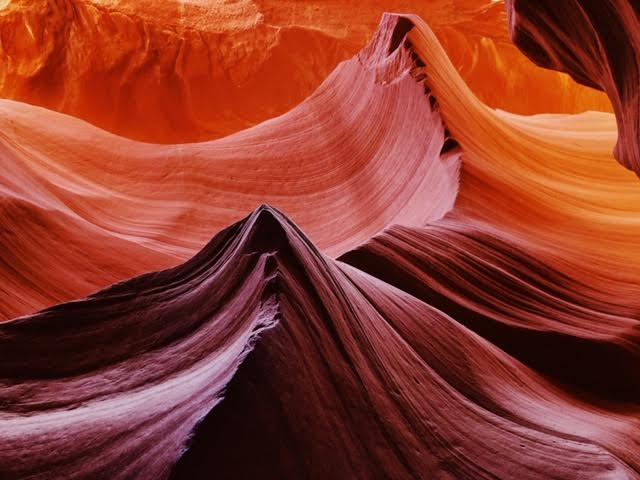
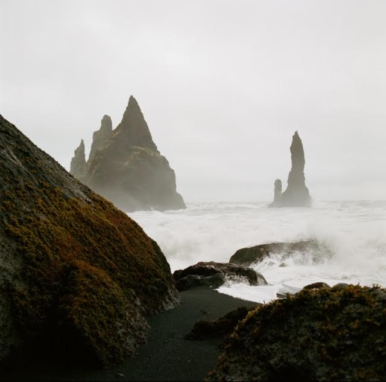
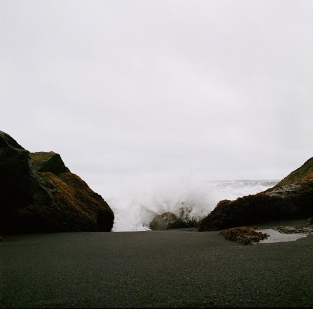

A R I Z O N A / U T A H

ANTELOPE CANYON
Antelope Canyon is a slot canyon in the American Southwest, on Navajo land east of Page, Arizona. It includes two separate, scenic slot canyon sections, referred to as Upper Antelope Canyon, and Lower Antelope Canyon. Unfortunately, I didn't get to see the 'upper' part because we didnt get our passes in time; Here are a couple photos I took of the 'Lower' Antelope Canyon.
 My friends and I love to hike so this trip was extremely fun. Not only did we get to see part of the Antelope Canyon, but we also got to drive and hike through many other places during this specific trip.
Some of the places we hiked through Arizona / Utah were
- Grand Canyon National Park
- Monument Valley
- Canyon de Chelly National Monument
- Zion National Park
I C E L A N D
One of my favorite trips with my friends. This place was so beautiful.
We traveled around the Outer Ring Road in 3 days. Here are some of my favorite 'from the window' shots from the car or side of the road


These landscapes in Iceland were so surreal to me. It truly felt like I was on some other planet
BLACK SAND BEACH
On the subject of 'surreal landscapes'... The Black Sand Beach in Iceland takes the cake. This was probably my absolute favorite places to see
 This place was so windy! We were getting pelted by the black sand. The wind was so strong we could almost fully lean back and stay upright. I'm so glad I have a good group of friends that love to experience nature as much as I do